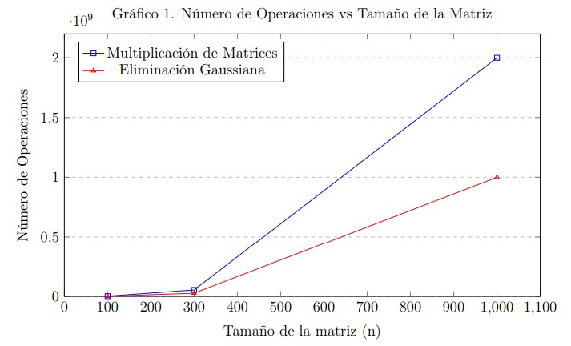
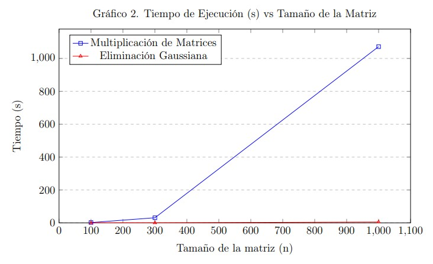

Proyecto 2
2A. Reporte escrito. Experimentos y análisis de estructuras de datos.
1. Introducción
Los experimentos y análisis de estructuras de datos son fundamentales en la ciencia de datos, ya que permiten evaluar y optimizar el rendimiento de algoritmos y sistemas que manejan grandes volúmenes de información.
Las estructuras de datos son formas de organizar y almacenar datos en una computadora para que puedan ser accedidos y modificados de manera eficiente. Cada estructura tiene sus propias ventajas y desventajas en términos de tiempo de acceso, uso de memoria y facilidad de implementación. Los experimentos en estructuras de datos suelen centrarse en medir estos aspectos bajo diferentes condiciones para determinar cuál es la más adecuada para una aplicación específica (Goodfellow et al., 2016).
El diseño experimental es una etapa esencial que precede al análisis de datos. Un diseño bien planificado asegura que los datos recopilados sean relevantes y útiles para el análisis posterior. Esto incluye la definición de variables, la selección de muestras y la implementación de controles para minimizar sesgos. Estas estructuras son esenciales para el desarrollo de software eficiente, especialmente en campos como el Internet de las Cosas (IoT) y el Big Data, donde la optimización de recursos es crucial (Strang, 2016).
El análisis de datos implica varias técnicas estadísticas y computacionales para interpretar los resultados experimentales. Esto puede incluir análisis exploratorio de datos (EDA) para identificar patrones y relaciones, así como análisis confirmatorio para probar hipótesis específicas. Herramientas como Hadoop, Spark, Power BI, Pandas y R son comúnmente utilizadas en este proceso (Grcar, 2011).
La multiplicación de matrices es una operación básica que se utiliza en numerosos cálculos matemáticos y algoritmos computacionales. Su relevancia radica en su capacidad para transformar y combinar datos de manera que se puedan extraer insights significativos. La eliminación gaussiana es un método clásico para resolver sistemas de ecuaciones lineales, transformando una matriz en una forma escalonada reducida por filas. Este método es ampliamente utilizado debido a su estabilidad numérica y su capacidad para manejar sistemas grandes.
El objetivo es entender cómo se comportan estos algoritmos en diferentes situaciones, especialmente en cuanto al número de operaciones (como multiplicaciones y sumas) y el tiempo que tardan en ejecutarse en la práctica. Para abordar esta cuestión, se plantea un estudio comparativo utilizando matrices aleatorias de tamaño \(n \times n\) para \(n = 100\), \(300\), \(1000\). Este enfoque permitirá evaluar la eficiencia de cada algoritmo y proporcionará una base sólida para futuras optimizaciones. Al comparar estos algoritmos, se busca responder a preguntas clave como: ¿Qué puedes concluir?, ¿Cuál es el impacto de acceder a los elementos contiguos en memoria de una matriz?, ¿Qué cambiarías si utilizas matrices dispersas?, y ¿Cuáles serían los costos?
2. Desarrollo
2.1 Bibliotecas utilizadas
import numpy as np
import time2.2 Implementación del algoritmo de multiplicación de matrices
def matrix_multiplication(A, B):
n = len(A) # Tamaño de la matriz (n x n)
C = np.zeros((n, n)) # Inicializar la matriz resultante con ceros
operations = 0 # Contador de operaciones
for i in range(n):
for j in range(n):
for k in range(n):
C[i][j] += A[i][k] * B[k][j] # Multiplicación y suma
operations += 2 # Una multiplicación y una suma
return C, operations2.3 Implementación del algoritmo de eliminación Gauss-Jordan
def gauss_jordan(A):
n = len(A)
operations = 0
A = np.array(A, dtype=float)
for i in range(n):
if A[i][i] == 0:
for j in range(i+1, n):
if A[j][i] != 0:
A[[i, j]] = A[[j, i]] # Intercambio de filas
operations += 1
break
div = A[i][i]
A[i] = A[i] / div
operations += n # n divisiones
for j in range(n):
if i != j:
A[j] = A[j] - A[j][i] * A[i]
operations += n # n multiplicaciones y restas
return A, operations2.4 Comparación de desempeño de los algoritmos implementados
sizes = [100, 300, 1000]
results = []
for n in sizes:
A = np.random.rand(n, n)
B = np.random.rand(n, n)
# Multiplicación de matrices
start_time = time.time()
C, mult_operations = matrix_multiplication(A, B)
mult_time = time.time() - start_time
# Eliminación Gaussiana
start_time = time.time()
_, gauss_operations = gauss_jordan(A)
gauss_time = time.time() - start_time
results.append({
'n': n,
'mult_operations': mult_operations,
'mult_time': mult_time,
'gauss_operations': gauss_operations,
'gauss_time': gauss_time
})2.5 Resultados obtenidos
for result in results:
print(f"Tamaño de la matriz (n): {result['n']}")
print(" Multiplicación de Matrices:")
print(f" Operaciones: {result['mult_operations']}")
print(f" Tiempo (s): {result['mult_time']:.6f}")
print(" Eliminación Gaussiana:")
print(f" Operaciones: {result['gauss_operations']}")
print(f" Tiempo (s): {result['gauss_time']:.6f}")
print("-" * 40)3. Análisis de Resultados
3.1 Resultados comparativos de desempeño
A continuación se muestra una tabla con los resultados obtenidos al comparar la multiplicación de matrices y la eliminación Gauss-Jordan sobre matrices de distintos tamaños. Se reporta el número total de operaciones y el tiempo de ejecución en segundos.
| Tamaño (n) | Operaciones Multiplicación | Tiempo Multiplicación (s) | Operaciones Gauss | Tiempo Gauss (s) |
|---|---|---|---|---|
| 100 | 2,000,000 | 1.829321 | 1,000,000 | 0.066816 |
| 300 | 54,000,000 | 30.990801 | 27,000,000 | 0.399951 |
| 1000 | 2,000,000,000 | 1071.753574 | 1,000,000,000 | 5.316519 |
Nota: La eliminación Gauss-Jordan muestra una notable ventaja en tiempo de ejecución respecto a la multiplicación de matrices, aunque ambas mantienen una proporción consistente en la cantidad de operaciones requeridas.
Los resultados obtenidos muestran el desempeño de dos operaciones: la multiplicación de matrices y la eliminación gaussiana/Gauss-Jordan sobre matrices de diferentes tamaños (100, 300 y 1000), cuantificando el número de operaciones y el tiempo de ejecución, como se muestra en la Tabla 1.
3.2 Análisis de Gráficos


En los Gráficos 1 y 2, se aprecia visualmente cómo se ve afectado el número de operaciones y el tiempo de ejecución en relación con el tamaño de la matriz.
En cuanto a la multiplicación de matrices, el número de operaciones aumenta significativamente con el tamaño de la matriz, lo cual es de esperarse, ya que se trata de una operación computacionalmente intensiva. El tiempo de ejecución también aumenta proporcionalmente, reflejando el impacto del crecimiento en complejidad.
Por otro lado, la eliminación gaussiana/Gauss-Jordan muestra una tendencia similar: a mayor tamaño de la matriz, mayor número de operaciones y mayor tiempo de procesamiento. Específicamente, para una matriz de tamaño \(n = 1000\), el tiempo fue de 1,071.753 segundos para la multiplicación de matrices y 5.316 segundos para la eliminación gaussiana, destacando una diferencia considerable a favor del segundo método en términos de eficiencia temporal.
El rendimiento puede verse influenciado por el hardware utilizado, como la capacidad de memoria, la arquitectura del procesador, y otros componentes del sistema. Estos factores afectan directamente el tiempo de ejecución observado. Entre los elementos que más impactan se incluyen la cantidad y velocidad de la memoria RAM, la arquitectura del procesador, el número de núcleos e hilos de ejecución, la frecuencia de reloj, la memoria caché del procesador, el tipo de almacenamiento, y la tecnología de la GPU si es utilizada (Raina et al., 2009).
4. Conclusiones
4.1 Impacto del acceso a elementos contiguos en memoria
El impacto de acceder a elementos contiguos en memoria de una matriz es un concepto fundamental en la optimización del rendimiento de programas. Este principio se basa en cómo los datos se almacenan y acceden en la memoria de una computadora.
Cuando los elementos de una matriz se almacenan de manera contigua en la memoria, el procesador puede acceder a ellos de forma más eficiente. Esto se debe a varios factores: el uso de la caché del procesador, el aumento de la localidad espacial, el prefetching, la reducción del consumo de energía y las operaciones vectorizadas.
La caché es una memoria de acceso rápido que almacena copias de datos que se utilizan frecuentemente, y cuando los datos están almacenados de manera contigua, es más probable que se carguen en la caché en bloques grandes, reduciendo así el tiempo de acceso.
La localidad espacial hace referencia a la tendencia de los programas a acceder a datos que están cerca unos de otros en la memoria. Cuando los datos están almacenados de manera contigua, se mejora la localidad espacial, lo que permite al procesador acceder a los datos de manera más rápida.
Los procesadores utilizan técnicas de prefetching para anticipar qué datos se necesitarán en el futuro y cargarlos en la caché antes de que sean solicitados. Cuando los datos están almacenados de manera contigua, el prefetching es más efectivo, ya que el procesador puede cargar bloques grandes de datos.
Otro impacto importante es la reducción del consumo de energía; un mejor uso de la caché y una menor latencia también pueden traducirse en un menor consumo energético.
El acceso contiguo a la memoria también puede influir en el rendimiento de las operaciones vectorizadas, que son comunes en aplicaciones científicas y de ingeniería. Las operaciones vectorizadas permiten al procesador realizar múltiples operaciones en paralelo, y cuando los datos están almacenados de manera contigua, es más fácil para el procesador realizarlas de manera eficiente (Bryant, 2016).
4.2 Uso de matrices dispersas: cambios y costos
Si utilizáramos matrices dispersas, estas tendrían un impacto en el rendimiento y la eficiencia de un programa, especialmente al trabajar con grandes conjuntos de datos donde la mayoría de los elementos son cero.
Los cambios al utilizar matrices dispersas incluyen:
Reducción del uso de memoria: Las matrices dispersas almacenan solo los elementos no nulos y sus posiciones, lo que reduce significativamente el uso de memoria en comparación con matrices densas.
Optimización de operaciones: Las operaciones matemáticas pueden ser más eficientes al realizarse únicamente sobre los elementos no nulos, disminuyendo así el tiempo de cómputo.
Uso de bibliotecas especializadas: Se requiere el uso de bibliotecas diseñadas específicamente para manejar matrices dispersas de forma eficiente.
Sin embargo, también se presentan algunos costos y desafíos:
Mayor complejidad en la implementación: Los algoritmos que manejan matrices dispersas pueden ser más complejos que los que utilizan matrices densas, requiriendo mayor tiempo de desarrollo y depuración.
Mantenimiento e interoperabilidad: La integración con sistemas o bibliotecas que no admiten matrices dispersas puede generar la necesidad de realizar conversiones costosas entre formatos.
Operaciones costosas: Inserciones y eliminaciones pueden requerir mayor tiempo de procesamiento, debido a la necesidad de actualizar estructuras de índices.
Sobrecarga de gestión de datos: Aunque se reduce el uso de memoria, la administración adicional puede afectar el rendimiento, especialmente si la matriz no es extremadamente dispersa.
Costos de conversión: Si es necesario convertir entre matrices densas y dispersas, esto puede introducir costos adicionales tanto en tiempo de ejecución como en memoria (Bryant, 2016).
5. Referencias
- Goodfellow, I., Bengio, Y., & Courville, A. (2016). Deep Learning. MIT Press.
- Strang, G. (2016). Introduction to Linear Algebra (5ª edición). Wellesley-Cambridge Press.
- Grcar, J. F. (2011). “Mathematicians of Gaussian Elimination.” Notices of the American Mathematical Society, 58(6), 782–792.
- Bryant, R. E., & O’Hallaron, D. R. (2016). Computer Systems: A Programmer’s Perspective (3rd ed.). Pearson.
- Teresa-Motiv, Saisang, brittmsantos, eross-msft, & JasonGerend. (2023, 17 de abril). Consideraciones sobre el uso de memoria para la optimización del rendimiento de AD DS.
- Raina, R., Madhavan, A., & Ng, A. Y. (2009). Large-scale Deep Unsupervised Learning using Graphics Processors. Computer Science Department, Stanford University.
6. Cambios Realizados
Se hicieron mejoras en el planteamiento de los experimentos y en la discusión de los resultados, como fue indicado por el maestro. Ahora cada figura tiene una explicación clara sobre lo que muestra y lo que significa. También se mejoró la redacción para que las ideas sean más comprensibles y ordenadas.